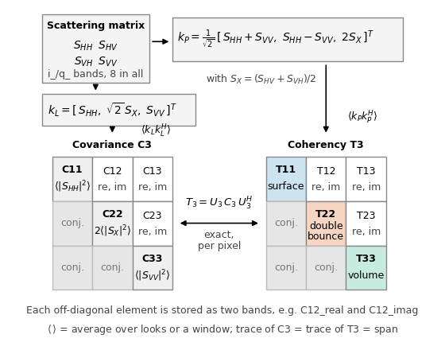

| SAR Concepts: Polarimetric Matrices and Parameters | |
Most polarimetric operators in SNAP work on a covariance matrix C or a coherency matrix T, which they read from a Matrix Generation product or build internally from the SLC. This page explains what each matrix element measures, how SNAP stores the elements as bands, what is lost with only two channels, and which scalar parameters SNAP derives from the matrices. The scattering matrix, the Pauli basis and Pauli RGB images are introduced on the Polarimetry Primer page.
For a monostatic radar, reciprocity makes SHV = SVH. The measured channels still differ by noise, so SNAP uses the average of the two cross-polar channels, SX = (SHV + SVH)/2, in both target vectors:
kL = [ SHH, √2 SX, SVV ]T
kP = (1/√2) [ SHH + SVV, SHH − SVV, 2 SX ]T = U3 kL
U3 = (1/√2) [ 1 0 1 ; 1 0 −1 ; 0 √2 0 ]
The covariance and coherency matrices are the ensemble averages C3 = <kL kLH> and T3 = <kP kPH>, where H is the conjugate transpose and < > the average over looks or a window. Element Cij is <ki kj*>. Since kP = U3 kL,
T3 = U3 C3 U3H
Both matrices are Hermitian (Cji = Cij*) and positive semi-definite, so |Cij|2 ≤ Cii Cjj. U3 is unitary, so they have the same eigenvalues and the same trace, the span, <|SHH|2> + 2<|SX|2> + <|SVV|2>. It equals the four-channel span of the Polarimetry Primer when SHV = SVH. The conversion is linear, so it gives the same result before or after averaging.
| Element | Expression | What it measures |
|---|---|---|
| C11, C33 | <|SHH|2>, <|SVV|2> | Co-polar powers |
| C22 | 2<|SX|2> | Twice the cross-polar power |
| C13 | <SHH SVV*> | Co-polar correlation. Real part > 0 where odd bounce dominates, < 0 where double bounce dominates |
| C12, C23 | √2<SHH SX*>, √2<SX SVV*> | Co/cross-polar correlation; near zero for reflection-symmetric media |
| T11 | <|SHH + SVV|2>/2 | Odd-bounce (surface) power |
| T22 | <|SHH − SVV|2>/2 | Even-bounce (double-bounce) power |
| T33 | 2<|SX|2> (= C22) | Twice the cross-polar power: volume, or a dihedral rotated about the line of sight |
| T12 | <(SHH + SVV)(SHH − SVV)*>/2 | Real part = (C11 − C33)/2, the HH/VV imbalance; negative for Bragg surfaces, where |SVV| > |SHH| |
| T13, T23 | <(SHH ± SVV) SX*> | Zero for reflection-symmetric media. A rotation about the line of sight moves power between T22 and T33 through Re T23 and leaves T11 and Im T23 unchanged |

Figure 1. From the scattering matrix to C3 and T3. Diagonal elements are real powers, one band each. Each upper off-diagonal element is stored as two bands; the lower triangle is its complex conjugate and is not stored. T3 diagonal colours follow the Pauli RGB.
A matrix built from one pixel, k kH, has rank 1. It has one non-zero eigenvalue, so the entropy is 0, and every correlation is perfect: |Cij|2 = Cii Cjj exactly. A distributed target is speckle, and only the average over L independent looks estimates its covariance. The rank grows to at most min(L, 3), so a 3×3 matrix needs at least three independent looks to be invertible, and many more before eigenvalues and correlations stop being biased (see Wishart statistics).
The average must be taken over the complex products k kH, not over intensities. Once the channels have been detected, their relative phase is gone, and the off-diagonal elements cannot be recovered. Averaging with non-negative weights keeps the matrix positive semi-definite. Interpolation kernels with negative lobes (bicubic, sinc) can break that property, which is one reason to geocode only the final products.
A dual-pol product gives a 2×2 matrix C2 = <k kH>. Which part of C3 it contains depends on the channel pair:
| Channels | k in SNAP | C2 holds (in C3 terms) | Missing |
|---|---|---|---|
| HH+HV | [SHH, SHV]T | C11, C22/2, C12/√2 | VV power, C13: no surface/double-bounce separation, no T3 |
| VV+VH (Sentinel-1) | [SVV, SVH]T | C33, C22/2, the conjugate of C23/√2 | HH power, C13: no T3 |
| HH+VV | [SHH, SVV]T | C11, C33, C13, hence T11, T22 and T12 | All cross-polar terms: no volume component |
No dual-pol pair gives the full T3, and the H/A/α or model-based decompositions of quad-pol data cannot be applied. SNAP's H-Alpha Dual Pol and Model-Based Dual Pol options are separate dual-pol methods; they and the noise floor are described on Dual-pol and Compact Polarimetry.
Several scalar parameters summarise the averaged matrix. The co-polar correlation ρHHVV = C13 / √(C11 C33) has a magnitude near 1 for smooth surfaces and low values for random volumes (1/3 for a cloud of randomly oriented thin dipoles). Its phase, the co-polar phase difference φHHVV = arg C13, is near 0° for odd bounce and near ±180° for a dihedral. The radar vegetation index exists in two forms. The eigenvalue form, RVI = 4λ3 / (λ1 + λ2 + λ3), uses the eigenvalues λ1 ≥ λ2 ≥ λ3 of the averaged T3. Kim and van Zyl (2009) use the backscatter form
RVI = 8σHV / (σHH + σVV + 2σHV) = 4 C22 / (C11 + C22 + C33)
with σ the linear (not dB) backscatter of each channel. Both are 0 for a pure surface and 1 for the dipole cloud, but they differ in between, so do not mix them in one study. Entropy, anisotropy and alpha are covered on Polarimetric Decompositions.
The Polarimetric Parameters operator writes the bands below. Span and PedestalHeight need a complex quad-pol input (SLC, C3 or T3). They and the complex-input RVI are computed from T3 averaged over Window Size X × Y (default 5 × 5) when Use Mean Matrix is on. All other bands are computed pixel by pixel from the input, so run the Polarimetric Speckle Filter first.
| Band | What the code computes | Note |
|---|---|---|
Span | T11 + T22 + T33 of the averaged T3 | The span, linear intensity |
PedestalHeight | λ3 / λ1, smallest over largest eigenvalue of T3 | 0 for a single deterministic target, 1 for fully random scattering; dimensionless |
RVI | Complex quad-pol input: 4λ3 / (λ1 + λ2 + λ3) of the averaged T3. Detected quad-pol intensities: 8σHV / (σHH + σVV + 2σHV) | Eigenvalue form on SLC, C3 or T3; backscatter form on detected data |
RFDI, CSI, VSI, BMI, ITI, HHVVRatio, HHHVRatio, VVVHRatio | The formulas in the parameter descriptions, applied to linear intensities | Linear, not dB. ITI and HHVVRatio are the same quantity, σHH/σVV. BMI is an intensity; the others are dimensionless |
Coh_HHVV, Coh_HHHV, Coh_VVVH | |Cij| / √(Cii Cjj) for the channel pair | Needs a C2, C3 or T3 product; unit coherence |
Phase_HHVV, Phase_HHHV, Phase_VVVH | arg Cij in radians, e.g. Phase_VVVH = arg<SVV SVH*> (SX for quad-pol input) | Unit phase |
The C2 band names do not say which two channels the product holds, so Polarimetric Parameters reads
the pair from the polarisation metadata that Matrix Generation copies; a Sentinel-1 VV+VH C2 gives
VVVHRatio, Coh_VVVH and Phase_VVVH. Without that metadata it falls
back to labelling the pair HH and VV. On an SLC, the operator uses the Intensity bands for the ratios and
refuses the Coh_ and Phase_ outputs. On a
coregistered stack each date gets its own bands.
For the Kim and van Zyl RVI on SLC data, use 4*C22/(C11+C22+C33) in Band Maths on a
filtered C3 (or 4*T33/(T11+T22+T33) on T3).
Polarimetric-Matrices), parameter
matrix: C2, C3, C4, T3 (default) or
T4; input an SLC (Sentinel-1 TOPS debursted). C2 needs a dual-pol or compact-pol product;
reduce a quad-pol product with Band Select first.C11, C12_real, C12_imag,
C13_real, C13_imag, C22, C23_real,
C23_imag, C33; T3 the same with T; C2 the first four. C4 and T4 add
14, 24, 34 and 44. Units: intensity (linear) on the
diagonal, real and imaginary off it. A coregistered stack gets one matrix per date, with the date
suffix.Most operators accept the SLC directly and build the matrix themselves:
| Operator | Accepts | Internally |
|---|---|---|
| Polarimetric Speckle Filter | Quad-pol SLC, dual/compact-pol SLC, C2, C3, T3 | Writes T3 for a quad-pol SLC, C2 for a dual/compact-pol SLC, otherwise the input matrix type |
| Polarimetric Decomposition | Quad-pol SLC, C3, T3, C4, T4; dual-pol options need dual-pol input | Averages the matrix over Window Size (not for Sinclair, Pauli, Cameron) |
| Polarimetric Parameters | Quad-pol SLC or detected intensities, C3, T3, C2, dual-pol SLC or GRD | T3 for Span, PedestalHeight and RVI; intensity bands or C3/C2 elements for the rest |
| Polarimetric Unsupervised Classification, Supervised Wishart | Quad-pol SLC, C3, T3 (Polarimetric Unsupervised Classification also C4, T4); dual-pol classifiers need dual-pol SLC or C2 | Averages the matrix over the window |
| Polarimetric Change Detection | C2, C3, T3 or quad-pol SLC, same type for both dates | A dual-pol SLC must first be turned into C2 |
Coh_ band is 1, whatever the target.RVI band of Polarimetric Parameters on SLC data (eigenvalue form) with a
backscatter-form RVI from another tool. The two differ.